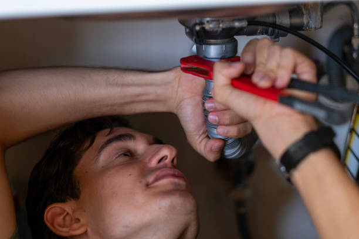
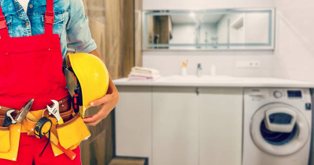

Leland Mississippi
info@innovativeremodelingkb.pro
Leland Mississippi
info@innovativeremodelingkb.pro

Reimagine your space with top-rated bathroom and kitchen remodeling services in Leland Mississippi . From sleek designs to practical layouts, we bring your vision to life with expertise and precision.
Click Here To Call Us (877) 848-1711Are you ready to elevate the style and functionality of your home? Our bathroom and kitchen remodeling services in Leland Mississippi are designed to turn your vision into reality. Whether you dream of a luxurious spa-like bathroom or a modern, chef-inspired kitchen, our experienced team has you covered.
We specialize in creating customized designs tailored to your lifestyle and preferences. From premium countertop installations and elegant cabinetry to energy-efficient fixtures, we use top-quality materials to ensure durability and timeless beauty. Our innovative design process incorporates the latest trends, ensuring your space is both stylish and practical.
With a commitment to exceptional craftsmanship, we prioritize every detail of your remodel. From planning and demolition to final installations, our professionals handle every step efficiently, minimizing disruptions to your daily routine. We also focus on sustainable practices, offering eco-friendly solutions to enhance your home's value while reducing its environmental impact.
Why settle for ordinary when you can have extraordinary? Whether you’re upgrading for personal enjoyment or increasing property value, our bathroom and kitchen remodeling services in Leland Mississippi promise to exceed your expectations. Contact us today for a consultation and let us bring your remodeling dreams to life!
Experience the difference with a trusted team dedicated to creating beautiful, functional spaces in Leland Mississippi .
Residential & commercial Bathroom and Kitchen Remodeling
Quality services at affordable prices
Immediate 24/ 7 emergency services


Why Choose Us for Your Leland Mississippi Bathroom and Kitchen Renovations?
When it comes to bathroom and kitchen renovations in Leland Mississippi we are your trusted partner for transforming your home into a beautiful, functional space. Here’s why homeowners across Leland Mississippi choose us for their renovation needs:
Expert Craftsmanship
Our team of skilled designers and contractors specializes in delivering top-quality bathroom and kitchen renovations. We take pride in our attention to detail, ensuring every project is completed with precision and care. Whether you’re looking to update your kitchen with modern appliances or transform your bathroom into a luxurious retreat, we have the expertise to bring your vision to life.
Customized Solutions
We understand that every home is unique. That's why we offer personalized design solutions tailored to fit your style, preferences, and budget. From contemporary to traditional designs, our team works closely with you to create a renovation that complements your lifestyle.
Timely and Affordable
At Bathroom and Kitchen Remodeling, we prioritize efficiency and cost-effectiveness. Our team works diligently to complete projects on time, without compromising on quality. We believe in transparent pricing and provide you with a detailed estimate before starting any work, so you know exactly what to expect.
Client Satisfaction Guarantee
Our commitment to customer satisfaction is at the core of everything we do. We listen to your needs and strive to exceed your expectations, ensuring you’re completely happy with the results. With our proven track record of successful bathroom and kitchen renovations across Leland Mississippi you can trust us to enhance the beauty and functionality of your home.
Ready to start your bathroom and kitchen transformation in Leland Mississippi ? Contact us today for a free consultation!
Residential & commercial Bathroom and Kitchen Remodeling
Quality services at affordable prices
Immediate 24/ 7 emergency services
Upgrading your countertops can refresh the look of your kitchen dramatically. We specialize in countertop upgrades in Leland Mississippi with a vast selection of materials such as granite, quartz, marble, and more. Each material tells its own story, offering unique visual appeal and durability. Our expert team will help you select the right material that fits your functionality and aesthetic preferences. We ensure precise measurements and expert installations to create a seamless look. Choose us for your countertop upgrades, and enjoy a stunning transformation in your kitchen that combines beauty and long-lasting durability.

Sustainability is becoming a crucial aspect of kitchen design, and our eco-friendly kitchen remodeling service focuses on creating beautiful spaces that are also environmentally responsible. We utilize sustainable materials, efficient appliances, and energy-saving designs, allowing you to reduce your ecological footprint while enjoying a gorgeous kitchen. Our team is educated about the latest eco-friendly trends and practices, ensuring your kitchen remodel embodies a commitment to both style and sustainability. With our help, create a beautiful kitchen that respects the planet and elevates your home.

A beautiful backsplash can be the finishing touch that enhances your kitchen's beauty and functionality. Our backsplash installation and upgrades in Leland Mississippi offer endless possibilities for materials, colors, and designs that can elevate the overall look of your kitchen. Whether you prefer classic subway tiles, elegant mosaics, or contemporary glass, we will work with you to select the ideal backsplash that aligns with your vision. Our skilled craftsmen ensure precise installations that are durable and visually striking. Count on us to provide an upgrade that adds both value and style to your kitchen.

Upgrading your kitchen appliances can significantly enhance functionality and efficiency. Our kitchen appliance upgrades include helping you select and integrate the latest technology, ensuring that everything from ovens to refrigerators operates seamlessly. Our team offers a comprehensive assessment of your current appliances to recommend efficient and stylish upgrades that fit your culinary needs. We understand that modern kitchens require integration of high-end appliances that blend well with cabinetry and space. With us, your upgraded kitchen will not only be stylish but also equipped with appliances that make cooking effortless.

Embrace the charm and warmth of farmhouse design with our specialized farmhouse kitchen designs. We combine rustic elements with contemporary functionality to create a welcoming, family-oriented environment. Think large kitchen islands, open shelving, and vintage-inspired fixtures that tell your story. Our team focuses on blending modern conveniences with timeless charm, ensuring your farmhouse kitchen is both practical and beautifully styled. Choose us for a transformation that fosters a sense of home while delivering on style and efficiency.
Modern minimalism focuses on simplicity, function, and clean lines. Our modern minimalist kitchen designs will strip away the unnecessary while maximizing aesthetic appeal. Our team emphasizes sleek cabinetry, integrated appliances, and restrained color palettes to create spaces that are both beautiful and practical. Minimalist design requires careful attention to detail, and our experienced team is adept at executing this style flawlessly. Choose us for your minimalistic kitchen renovation and experience a beautifully curated space that embodies modern elegance and functionality.

Step into the future with our smart kitchen technology integration services. At Bathroom and Kitchen Remodeling, we believe that a modern kitchen should be equipped with the latest technology for enhanced convenience and efficiency. Our team specializes in integrating smart appliances, controlled lighting, and innovative features that simplify your cooking and entertaining. Whether it’s a voice-activated assistant or a smart refrigerator, our designs in Leland Mississippi ensure your kitchen is innovative and user-friendly. Embrace the benefits of a smart kitchen that enhances your lifestyle with our expert integration solutions.

Expand your living space with our outdoor kitchen construction services . Outdoor kitchens offer the perfect solution for entertaining guests while enjoying the beautiful outdoors. Our expert design team works with you to create a custom outdoor kitchen equipped with grills, sinks, refrigerators, and seating areas that fit your lifestyle. We use high-quality materials designed to withstand the elements while ensuring that your outdoor kitchen is both functional and stylish. Trust us to construct the outdoor kitchen of your dreams, making your home the ultimate entertaining venue.

Enhance the functionality and ambiance of your kitchen with our lighting and electrical upgrades. At Bathroom and Kitchen Remodeling, we understand the importance of proper lighting in creating a beautiful kitchen environment. Our team specializes in designing and installing lighting solutions that improve visibility, functionality, and ambiance. From task lighting and under-cabinet fixtures to decorative pendants and recessed lighting, we light up your kitchen in style. We also address any electrical upgrades needed to support modern appliances and technologies. With our extensive experience serving the Leland Mississippi area, we take pride in providing reliable services and outstanding results. Why choose us? Our commitment to quality workmanship and customer satisfaction ensures that your kitchen lighting upgrades create the perfect atmosphere for cooking and entertaining.
Years Experience
Expert Technicians
Satisfied Clients
Compleate Projects
At Innovative Remodeling KB, we specialize in transforming kitchens and bathrooms into stunning, functional spaces that perfectly match your lifestyle and preferences. Serving Leland Mississippi our team of skilled designers and craftsmen bring years of expertise to every project, ensuring top-quality results that exceed expectations.
What sets us apart is our commitment to customer satisfaction. From the moment you contact us, we prioritize your vision. Our team works closely with you, offering personalized design consultations that take your ideas and transform them into reality. Whether it's modernizing your kitchen with sleek countertops, custom cabinetry, or upgrading your bathroom with luxury fixtures and efficient layouts, we bring your dreams to life.
Our reputation for reliability and attention to detail is unmatched in Leland Mississippi . We use only the highest quality materials and ensure precise, efficient work, completing every job on time and within budget. Our focus on sustainability means we also incorporate energy-efficient solutions that reduce utility costs while enhancing the comfort and beauty of your home.
Innovative Remodeling KB is proud to be your trusted remodeling partner in Leland Mississippi . With a passion for craftsmanship and a dedication to creating functional, beautiful spaces, we are the go-to choice for homeowners looking to renovate their kitchens or bathrooms. Choose us, and experience the difference that quality, expertise, and customer-centric service can make in your home remodeling project.
In today's fast-paced world, your bathroom should be a sanctuary—a place where you can unwind and rejuvenate. Luxury bathroom remodeling offers a unique opportunity to blend comfort and style, transforming ordinary spaces into extraordinary retreats. At Bathroom and Kitchen Remodeling, we pride ourselves on our expert craftsmanship, attention to detail, and commitment to excellence. Our team utilizes high-end materials and the latest design trends, ensuring that your bathroom becomes an expression of your personal style. Whether you're looking for elegant fixtures, beautiful tile work, or custom cabinetry, we have the experience and knowledge to turn your vision into reality. Understanding the nuances of luxury design, we work closely with you to create a space that enhances both function and beauty, all while maximizing your home's value. Why choose us? With years of experience we offer competitive pricing and an unwavering commitment to your satisfaction, ensuring that your luxury bathroom exceeds your expectations.
Transforming a small bathroom does not have to mean sacrificing style or functionality. Small bathroom renovations are an area where our design expertise shines. At Bathroom and Kitchen Remodeling, we understand the unique challenges posed by limited space, and we specialize in innovative solutions that maximize every inch. From clever storage solutions to space-saving fixtures, we work tirelessly to create a small bathroom that feels expansive and welcoming. Our team stays updated on the latest trends and technology, ensuring that each project incorporates modern convenience. With an emphasis on both aesthetics and practicality, we collaborate with you to produce a stylish sanctuary that meets your specific needs. Whether you're looking to refresh your decor or undertake a complete renovation, our experience in Leland Mississippi makes us the ideal partner for your small bathroom project. Choose us for our dedication to quality, personalized service, and our track record of delighted customers.
Experience the ultimate in bathroom luxury with our walk-in shower installations. These modern features not only enhance your daily bathing routine but also add a significant wow factor to your bathroom. Our skilled team will work with you to design a shower that fits your space perfectly, from seamless glass enclosures to exquisite tile choices. We prioritize accessibility, making your shower experience effortless. Choose us for your walk-in shower installation, and you’ll benefit from our commitment to quality and customer service, ensuring every detail is just right, down to faucets and shower heads that elevate your bathing experience.
Is your bathtub no longer serving its purpose? Consider our bathtub-to-shower conversions as a functional upgrade. We specialize in transforming underutilized bathtubs into modern, spacious showers that reflect contemporary design. Our team works closely with you to choose materials, finishes, and fixtures that not only enhance your bathroom’s aesthetics but also contribute to your lifestyle changes. With our experience, your new shower will be stunning and practical, catering to your needs while increasing your home’s value. Trust us to guide you through the design process smoothly and efficiently.
Elevate your bathroom's style and functionality with our custom vanity installations. A well-designed vanity can serve as much more than just a sink—it's a central piece that contributes to your bathroom's overall aesthetics. At Bathroom and Kitchen Remodeling, we specialize in creating tailor-made vanities that reflect your unique taste and meet your storage needs. Our design professionals collaborate closely with you, understanding your requirements and preferences to craft a vanity that aligns perfectly with your vision. From material selection to hardware completion, we ensure that every detail is accounted for. Our years of experience and a keen eye for design help us deliver customized solutions that not only enhance your bathroom’s beauty but also its value in Leland Mississippi . Why choose us? We provide exceptional service, quality craftsmanship, and a hassle-free installation process, making us the best choice for custom bathroom solutions.
The master bathroom is your sanctuary, and at Bathroom and Kitchen Remodeling, we specialize in master bathroom remodeling that transforms this essential space into a luxurious retreat. From elegant tub and shower combinations to double vanities and expansive storage, we focus on creating an oasis tailored to your needs. Our design process includes collaboration with clients to ensure we capture your vision fully—from layout to fixtures, lighting, and finishes. Our skilled craftsmen utilize high-quality materials, ensuring that every renovation element meets the highest standards. Let us help you design a master bathroom that merges comfort, functionality, and style.
Your powder room should wow your guests while reflecting your style. Our powder room renovations are designed to optimize the efficiency and aesthetics of smaller spaces. We understand that every detail matters in these compact rooms and believe that a powder room should never feel basic. Our team focuses on creating innovative storage solutions, selecting statement fixtures, and integrating eye-catching designs to make this space memorable. Adding chic wallpaper, decorative mirrors, and high-end finishes ensures your powder room renovation is not just functional, but also a delightful experience for you and your guests. Transform your powder room into a stylish statement piece that welcomes everyone who visits your home.
One of the most transformative features of any bathroom is the flooring and tiles. At Bathroom and Kitchen Remodeling, we offer comprehensive bathroom tile and flooring upgrades that not only beautify your space but also enhance durability and performance. Choose from a variety of materials, including classic ceramics, luxurious natural stone, and trendy mosaics, all tailored to match your style. Our experienced team in Leland Mississippi ensures meticulous installation that adheres to industry standards, promising longevity and a flawless appearance. Elevate your bathroom's aesthetic appeal and functionality with our expertly curated tile and flooring options.
For environmentally conscious homeowners, our eco-friendly bathroom remodeling services in Leland Mississippi are designed to combine style with sustainability. Our team is knowledgeable about energy-efficient fixtures, water-saving technologies, and sustainable materials. From low-flow toilets to recycled glass tiles, we offer a range of options that help you reduce your environmental footprint without sacrificing aesthetics. By choosing our services, you can create a luxurious and eco-friendly bathroom that promotes sustainability. Our expertise ensures that you will achieve a beautiful bathroom while making a positive impact on the environment.
Accessibility is crucial in modern bathroom design. Our accessible bathroom designs in Leland Mississippi focus on creating beautiful spaces that are compliant with ADA guidelines. We understand the importance of mobility, safety, and comfort for all users. Our team will work closely with you to create an inclusive bathroom that includes features like grab bars, zero-threshold showers, and adjustable vanities. By emphasizing both aesthetics and functionality, we ensure that our accessible bathrooms are visually appealing while meeting the unique needs of your family. Trust us to transform your bathroom into a safe and stylish space.
Indulge in relaxation with our spa-style bathroom transformations in Leland Mississippi . Inspired by retreats and wellness centers, we focus on creating a serene and calming atmosphere in your home. Our skilled designers incorporate elements such as soaking tubs, rainfall showerheads, mood lighting, and natural materials to craft your personal spa oasis. We take your preferences into account to design a space that suits your lifestyle and promotes well-being. With our dedication to quality craftsmanship and attention to detail, we create spa-like experiences that are both luxurious and functional.
Proper lighting is crucial in any bathroom remodel, significantly impacting both functionality and aesthetic appeal. At Bathroom and Kitchen Remodeling, we specialize in strategic bathroom lighting upgrades that enhance the beauty of your space. Our experienced professionals understand the different layers of lighting needed, from task lighting around mirrors to ambient light creating a warm ambiance. We'll guide you in selecting modern fixtures, energy-efficient LED options, and creative solutions that illuminate your bathroom beautifully. Upgrade your lighting with us, and see how it transforms your bathroom into a welcoming environment.
Maximizing storage without sacrificing style is key in any bathroom. Our custom bathroom cabinetry solutions are tailored to suit your unique space and needs. We will design cabinets that provide ample storage while reflecting your personal design style, be it modern, classic, or somewhere in between. Our dedicated craftsmen utilize top-quality materials and construction techniques, ensuring your cabinetry is not just beautiful but durable as well. Working with us means investing in cabinetry that elevates your bathroom experience and aligns perfectly with your vision.
Upgrading your bathroom plumbing is essential for enhancing both functionality and efficiency. At Bathroom and Kitchen Remodeling, we offer expert plumbing upgrades that ensure your systems are modern, efficient, and up to code. Our team works diligently to design systems that improve water flow, reduce waste, and enhance comfort. Whether you're considering a full plumbing overhaul or targeted updates, we have the expertise to handle projects of any size. Our commitment to using high-quality materials and innovative solutions guarantees lasting results. With vast experience serving the Leland Mississippi area, we pride ourselves on exceptional service and meticulous attention to detail. Why choose us? We prioritize your satisfaction and safety, providing reliable plumbing upgrades that enhance your bathroom's performance.
A beautiful shower enclosure can be a standout feature of your bathroom. Our shower enclosure installations in Leland Mississippi are designed to enhance your bathing experience while contributing to your bathroom’s overall design. We offer a variety of options, including frameless glass, semi-frameless, and more traditional designs. Our professional team ensures precise installations for both functionality and aesthetic appeal. By focusing on design elements and quality materials, we guarantee that your new shower enclosure will be a luxurious addition to your home.
The kitchen is often the heart of the home—a gathering place for family and friends. Our custom kitchen remodeling services help you create the ultimate space tailored to your lifestyle. At Bathroom and Kitchen Remodeling, we specialize in transforming kitchens into functional, stylish, and welcoming environments. From layout optimization and custom cabinetry to stunning countertops and backsplashes, our expert designers will guide you through every decision. We take the time to understand your needs and preferences, ensuring that the final product reflects your taste and enhances your daily life. With extensive experience we have built a reputation for quality, attention to detail, and customer satisfaction. Choose us for our innovative designs, reliable service, and commitment to turning your culinary dreams into reality.
Elevate your culinary space with our luxury kitchen renovations in Leland Mississippi . Our expert team believes the kitchen is the heart of the home, and we strive to create luxurious spaces with state-of-the-art appliances, high-end materials, and exquisite design elements. We offer a variety of styles, ensuring that your renovated kitchen aligns with your vision while integrating the latest trends and technologies. With our attention to detail and commitment to quality, we ensure that every aspect of your kitchen renovation meets the highest standards. Choose us for a luxurious kitchen that combines beauty and functionality.
Even a small kitchen can shine with the right makeover. Our small kitchen makeovers at Bathroom and Kitchen Remodeling are designed to optimize every square foot of your space, ensuring you have a stylish, functional kitchen despite size limitations. Our team specializes in clever storage solutions, space-saving appliances, and vibrant designs that can refresh the look of your cooking area. We believe that small spaces deserve grand designs, and we work meticulously to deliver a kitchen that suits your lifestyle without compromising on style or function. Let us revamp your small kitchen into a modern masterpiece.
Discover the beauty and functionality of open-concept kitchen designs with Bathroom and Kitchen Remodeling. An open kitchen layout fosters connection and interaction, making it perfect for entertaining family and friends. Our expert designers specialize in creating seamless transitions between your kitchen and living spaces, enhancing both functionality and flow. From removing walls to incorporating islands that double as dining areas, we ensure that your open-concept space is tailored to your lifestyle needs. We use high-quality materials and craftsmanship to create a stylish yet practical kitchen that becomes the heart of your home . Why choose us? Our extensive experience, innovative designs, and dedication to customer satisfaction ensure that your open concept kitchen is an extraordinary space you'll love for years to come.
A kitchen island serves as a multifunctional hub in your home, providing additional workspace, storage, and even a casual dining area. At Bathroom and Kitchen Remodeling, we specialize in customized kitchen island installations that are tailored to your unique needs and design preferences. Our team works with you to maximize functionality while blending your island seamlessly with the overall kitchen design. Whether you envision a large, multi-tiered island or a sleek contemporary piece, our skilled craftsmen can turn your ideas into reality. With years of experience delivering exceptional service we pride ourselves on quality workmanship and customer satisfaction. Choose us for your kitchen island installation to enhance both the utility and aesthetic appeal of your space.
Custom cabinets can dramatically change the functionality and aesthetics of your kitchen. We specialize in designing and installing cabinetry that perfectly fits your space and style. Whether you prefer modern, classic, or contemporary finishes, our talented craftsmen and designers collaborate with you to create cabinets that reflect your taste while providing optimal storage solutions. With a focus on quality materials and craftsmanship, we guarantee durable constructions that enhance your overall kitchen experience. Choose us for custom cabinet design, and let us bring your visions to life.
At Bathroom and Kitchen Remodeling, we offer professional remodeling services designed to transform your home in Leland Mississippi . Whether you're looking to update your kitchen, renovate your bathroom, or enhance your entire living space, we provide custom solutions that meet your unique needs and budget. Our team of skilled professionals uses only the highest quality materials, ensuring your remodeling project is completed to the highest standards.
We understand that every home and homeowner is different, which is why our services are fully tailored to your preferences. From initial consultation to the final touches, we work closely with you to bring your vision to life. Whether it's maximizing space, improving functionality, or boosting curb appeal, our remodeling services are designed to enhance the beauty and value of your home in Leland Mississippi .
Our remodeling expertise extends to all aspects of home improvement, including kitchen remodeling, bathroom renovations, basement finishing, and more. We focus on delivering outstanding craftsmanship and exceptional customer service to ensure your complete satisfaction. Trust us to handle your project with precision and care, delivering results that exceed your expectations.
Let us transform your home into the space you've always dreamed of. Contact Bathroom and Kitchen Remodeling today to get started with professional remodeling services in Leland Mississippi and see how we can enhance your home for years to come!
Leland is a city in Washington County, Mississippi, United States. It is located within the Mississippi Delta, on the banks of Deer Creek. The population was 4,481 at the 2010 census. It was once a railway town and had long been a center of cotton culture, which is still an important commodity crop in the rural area. It was once considered the second-largest city in Washington County in 1920 due to its rapid growth of residents, businesses, and schools.
Yes, Water Damage SanJose offers affordable options to help you achieve your desired bathroom remodel within your budget in Leland Mississippi .
Yes, Water Damage SanJose offers solutions for bathrooms of all sizes, including small spaces, across Leland Mississippi .
Yes, we specialize in creating and installing custom cabinetry to suit your storage needs and style preferences .
Yes, Water Damage SanJose provides flexible financing plans to make your dream remodeling project more affordable .
Our commitment to quality, attention to detail, and exceptional customer service make us the top choice for remodeling in Leland Mississippi .
Yes, Water Damage SanJose has a portfolio of completed projects that you can review for inspiration .
Yes, we are fully licensed and insured to provide reliable bathroom and kitchen remodeling services in Leland Mississippi .
It’s recommended to update these spaces every 10-15 years, but Water Damage SanJose can help assess your specific needs .
Yes, Water Damage SanJose offers energy-efficient lighting, appliances, and materials to reduce utility costs .
Our design team at Water Damage SanJose will guide you in selecting the best layout based on your space and lifestyle .
Water Damage SanJose uses water-resistant materials and advanced sealing techniques to prevent water damage kitchens.
Simply contact Water Damage SanJose, and we’ll schedule a free consultation to provide a detailed quote for your project .
Popular trends include open shelving, smart appliances, and minimalist designs, all of which Water Damage SanJose can incorporate into your kitchen .
Yes, Water Damage SanJose partners with trusted local suppliers to ensure high-quality materials for all remodeling projects in Leland Mississippi .
Yes, Water Damage SanJose offers comprehensive warranties on both materials and workmanship for projects in Leland Mississippi .
Yes, Water Damage SanJose offers emergency water damage services to address any unexpected issues during remodeling .
We do! Water Damage SanJose offers sustainable materials and energy-efficient solutions for remodeling projects .
Yes, we specialize in water damage repairs to ensure your remodeled bathroom or kitchen in Leland Mississippi is safe and durable.
Water Damage SanJose specializes in bathroom and kitchen remodeling, offering design consultations, custom installations, and water damage restoration services across Leland Mississippi .
The timeline depends on the scope of the project, but most bathroom remodels by Water Damage SanJose in Leland Mississippi take 2-4 weeks.
Yes, our expert designers can match or complement existing styles to maintain your home’s aesthetic .
The cost varies based on the size and materials used, but Water Damage SanJose provides free estimates for all kitchen remodeling projects .
Yes, we can integrate your existing appliances into the new design during kitchen remodeling in Leland Mississippi .
We recommend durable and water-resistant materials such as ceramic tiles, quartz countertops, and PVC panels for bathroom remodels in Leland Mississippi .
Absolutely! Water Damage SanJose provides fully customizable kitchen designs to meet your specific style and functionality needs .
Yes, Water Damage SanJose has the expertise and resources to handle simultaneous kitchen and bathroom remodels .
Regular cleaning and proper ventilation will help maintain your remodeled bathroom by Water Damage SanJose in Leland Mississippi .
You can call or visit Water Damage SanJose’s website to schedule a free consultation for your project .
Permits are often required for major renovations. Water Damage SanJose handles all necessary permits for projects .
Yes, Water Damage SanJose specializes in converting bathtubs to walk-in showers for a modern and functional bathroom in Leland Mississippi .
I hired Innovative Remodeling KB for a bathroom remodel and was beyond impressed. The team was professional and took great care in every detail. The results were amazing. I recommend them to anyone in Leland Mississippi !
Profession
Innovative Remodeling KB completely revamped our bathroom, and we couldn’t be happier! They kept us informed every step of the way. If you need remodeling in Leland Mississippi look no further!
Profession
Our experience with Innovative Remodeling KB was amazing! They remodeled our bathroom beautifully and were a pleasure to work with. I would recommend them to anyone in Leland Mississippi who wants quality work.
Profession
Leland MS Bathroom and Kitchen Remodeling Pros
(877) 848-1711
info@innovativeremodelingkb.pro
09.00 AM - 09.00 PM
09.00 AM - 12.00 PM